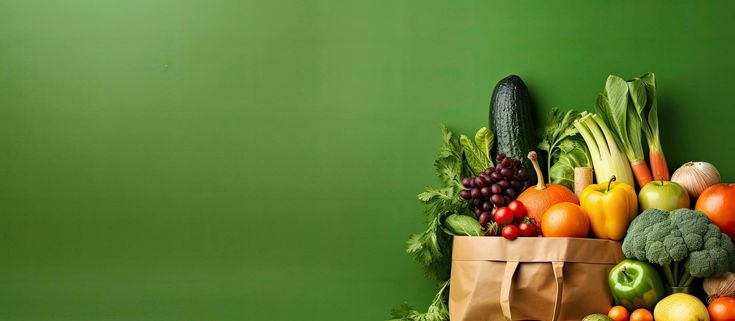
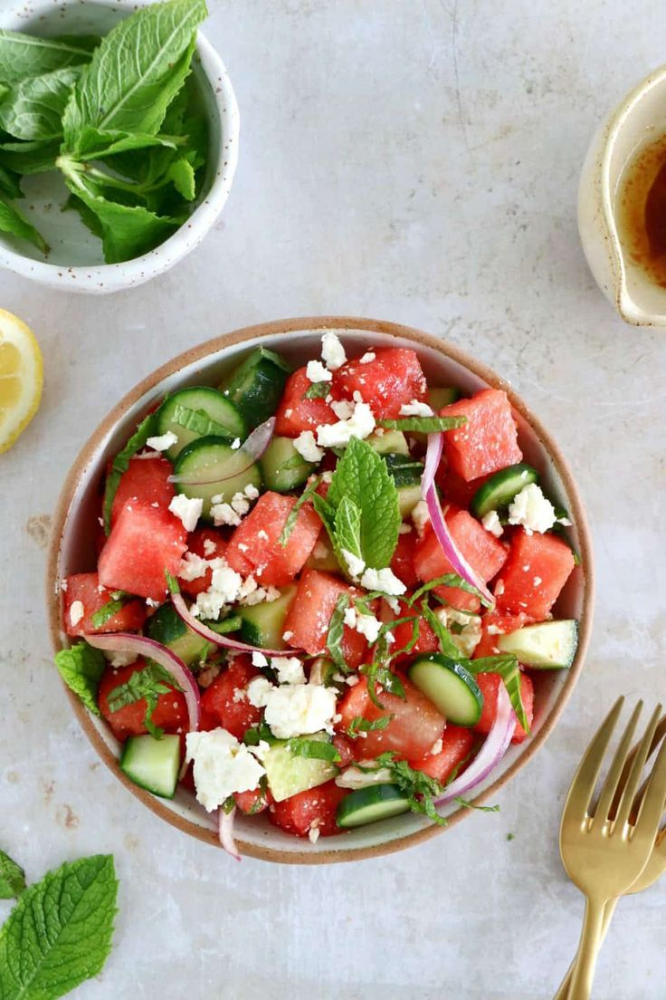
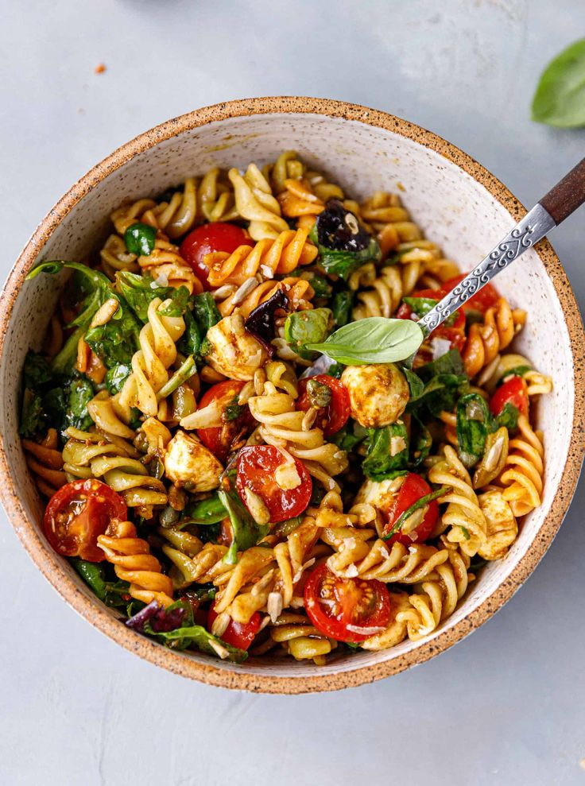

Bienvenue sur Salade Bio
Découvrez nos délicieuses salades bio.
Nos recettes à la une

Salade pastèque, concombre, feta et menthe
Une salade fraîche et légère, parfaite pour l'été.
Voir la recette
Salade de pâtes bio aux légumes d’été
Une recette colorée et gourmande.
Voir la recette